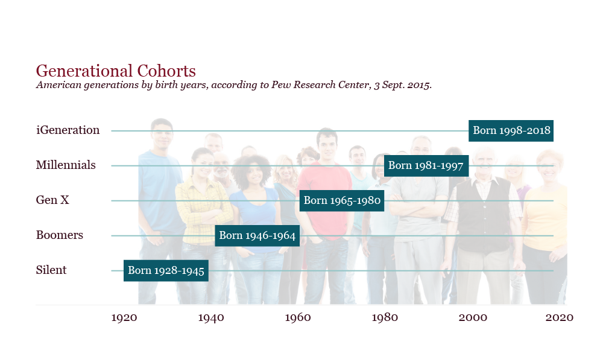

Background Information
There is a lot of confusion about the generally accepted notion of "generations" that divide up the American populace - some generation names, like baby boomer and millennial are in the common vernacular. Who exactly are people referring to when they talk about a Millennial, though, and why is it so common for the reference to be a negative one? Although it might seem like a unique struggle to modern civilization, there is constant evidence going back to Ancient Greece of the 'old guard' complaining about the next generation. "The total neglect of the art of speaking" for instance, or "lax habits, low moral standards," or "full of self-conceit and admiration" are all examples compiled in an article on Mental Floss from people all across time. Sound familiar?
We'll cover topics such as whether or not Millennials really can multitask, or if they spend too much time texting and its rotting their brains. We'll also cover some of the great things the Millennial generation has either caused or been instrumental in, such as marriage equality. On this page, we seek to provide a general overview so that we can all be on the same page as we examine in detail who exactly Millennials are and how they measure up to the stereotypes.
 There are many generations, of course, but Baby Boomers are the most recent generation that is at the most odds with Millennials (Gen X is between, however they tend to be more similiar to Millennials than not).
There are many generations, of course, but Baby Boomers are the most recent generation that is at the most odds with Millennials (Gen X is between, however they tend to be more similiar to Millennials than not).
 This quote is from an actual reader of Money Talks News shown in this article, responded to by columnist Stacy Johnson.
This quote is from an actual reader of Money Talks News shown in this article, responded to by columnist Stacy Johnson.
The rest of this project seeks to prove to this anonymous quoter, and the portion of the population they represent, why they are mistaken about the Millennial generation. This is not to say that Millennials don't have their flaws, but all generations - all people - are a mixture of both good and bad.
